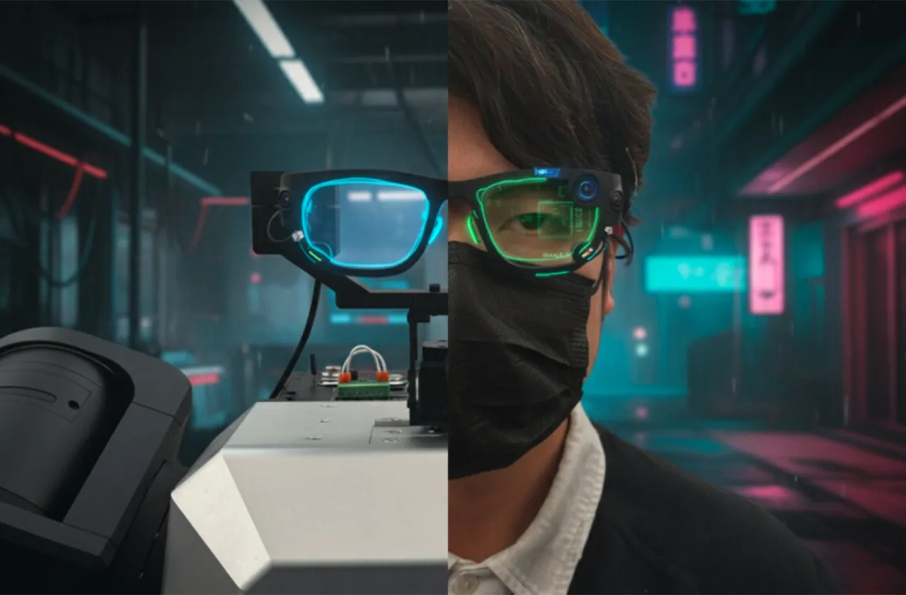
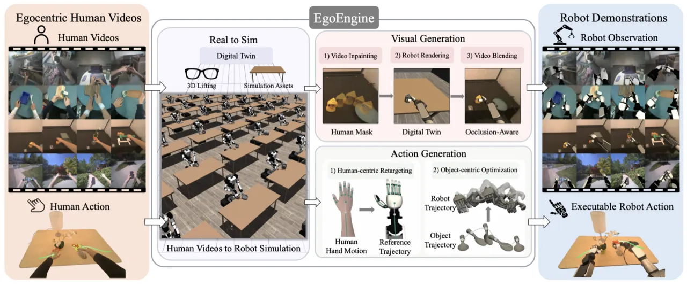
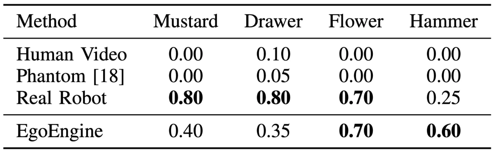
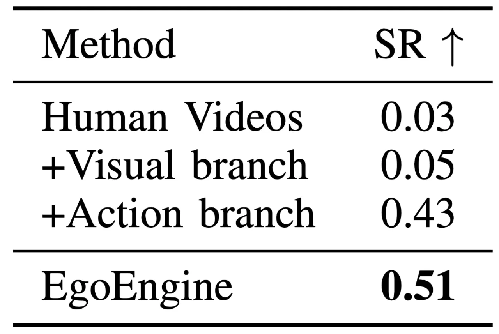

EgoEngine 将第一视角 RGB 视频转化为可直接用于机器人策略训练的成对示范数据，同时生成 (1) 替换人手为机器人外观、保留场景上下文的高保真观测视频，以及 (2) 在可行性约束下对齐任务物体运动的可执行机器人轨迹，实现无需任何真实机器人遥操作数据的零样本灵巧策略学习。
灵巧操作的大规模数据采集代价高昂——遥操作依赖专业硬件、复杂接口与高自由度接触控制，难以扩展。相比之下，第一视角人类视频天然记录了多样场景中的接触丰富操作行为，是廉价且可扩展的监督来源。然而，将人类视频直接用于机器人学习面临两大障碍。
"Human videos are not robot demonstrations. The challenge is twofold: visually, human arms and hands occlude the scene and differ substantially from the robot embodiment; on the action side, differences in morphology, kinematics, actuation, and contact dynamics make directly retargeted robot trajectories physically infeasible."
EgoEngine 同时应对两个差距：视觉差距（visual gap）——人类手臂遮挡场景且外观与机器人截然不同；动作差距（action gap）——人类运动直接重定向给机器人后，因形态学、运动学与接触动力学不匹配而不可执行。作者提出以物体为中心的「视觉–动作双支生成管线」，将这两个差距的弥合统一在同一框架内。

给定第一视角 RGB 视频，EgoEngine 首先构建物体中心的数字孪生（相机几何、深度、6D 物体轨迹、手部与物体 mask），然后并行运行两条支路：动作支路将人类运动转化为可执行机器人动作；视觉支路将人类帧转化为机器人视角观测。两条支路联合输出成对的机器人示范 (õt, ãt)。

使用 Aria Gen2 眼镜采集同步 RGB 帧与每帧 21 个手部关键点的 3D 姿态。FoundationStereo 估计绝对深度图；SAM2 通过手部关键点提示生成人手 mask，通过首帧点提示追踪任务物体 mask；FoundationPose 在 RGBD 帧上估计时序一致的 6D 物体轨迹 {Tot}Tt=1。上述相机几何、深度、mask、手部姿态、物体网格与物体轨迹共同构成数字孪生。
给定人类视频中 5 根手指指尖的位置与朝向 {(pttip,k, Rttip,k)}5k=1 及腕部朝向 Rtwrist，使用 MINK 求解逆运动学（IK）：
q*t = arg min Ltip(q; t) + λw Lwrist(q; t)，subject to 关节限位与自碰撞约束。
得到参考轨迹 τref = {q*t}Tt=1，作为后续仿真优化的运动先验。
重定向轨迹在形态学与接触动力学不匹配下往往不可执行。EgoEngine 在仿真中以物体中心目标对轨迹进行细化——用人类视频提取的物体运动 Tot 作为任务级目标，定义物体姿态跟踪误差 et（平移欧式距离 + SO(3) 测地距离的加权组合），超过阈值 C 则提前终止，奖励为 rtobj = C − et。
EgoEngine 将长视域轨迹分解为时序 chunk，对每个 chunk 按能力递增顺序选择求解器：
MCTS-style 策略从 Replay 开始，仅在当前模式无法满足物体中心准则时逐级升级，避免对全轨迹施以不必要的强力优化。额外采用双 chunk 联合优化窗口以避免孤立求解的局部极小值。
分三步处理每帧：(1) 人手移除（Video Inpainting）：用 SAM2 mask 遮盖手臂区域，Inpaint-Anything v2 填充被遮挡的场景与物体内容，得到无示范者帧 Īt；(2) 机器人渲染（Robot Rendering）：根据动作支路输出的机器人轨迹，在第一视角渲染机器人 Rt；(3) 遮挡感知融合（Occlusion-Aware Blending）：通过两次差分渲染计算可见机器人 mask M̃rt（保持物体不透明、机器人透明/不透明各渲染一次，对比像素差），最终合成观测：
õt = M̃rt ⊙ Rt + (1 − M̃rt) ⊙ Īt
聚合所有人类视频生成的合成机器人数据集 D̃robot = {(õ, ã)}，使用 HPT 以 ℓ2 动作回归损失训练 visuomotor 策略 πθ，将双支路生成的观测与动作信息蒸馏为闭环控制器。
实验围绕三个问题展开：(1) 生成的机器人观测与真实机器人观测在视觉上是否一致？(2) 生成的机器人动作是否可执行且任务对齐？(3) 生成的观测–动作对是否支持零样本策略学习？使用两个数据集：TACO（2,500 段视频）和 Aria 数据集（200 段真实世界第一视角人类视频，4 个任务）。仿真机器人为双臂 RB-Y1（2×7 DoF 手臂 + 2×12 DoF XHands），真实机器人为单臂 RB-Y1。
| 方法 | ResNet18 FD↓ | VGG16 FD↓ | DINOv2 FD↓ |
|---|---|---|---|
| Human Video | 764.5 | 670.2 | 602.9 |
| EgoMimic | 830.5 | 812.1 | 579.6 |
| VACE (WAN2.1) | 713.6 | 745.3 | 488.0 |
| Phantom | 620.0 | 650.8 | 470.6 |
| EgoEngine (Ours) | 614.7 | 644.2 | 473.1 |
EgoEngine 在 ResNet18 和 VGG16 上取得最低 FD，与真实机器人观测的特征分布最接近；DINOv2 上与 Phantom 基本持平（473.1 vs. 470.6）。定性对比中，EgoEngine 在机器人–物体接触区域与可见度排序上表现出更强的物理一致性。
| 方法 | TACO SR↑ | TACO Step↑ | TACO Reward↑ | TACO Cost↓ | Aria SR↑ | Aria Step↑ | Aria Reward↑ | Aria Cost↓ |
|---|---|---|---|---|---|---|---|---|
| Mink / Replay | 0.17 | 0.29 | 0.29 | 1.00 | 0.10 | 0.66 | 0.62 | 1.00 |
| Spider / MPC | 0.25 | 0.42 | 0.39 | 7,923 | 0.20 | 0.69 | 0.65 | 4,382 |
| H2S2R / RL | 0.83 | 0.86 | 0.70 | 73,675 | 0.90 | 0.94 | 0.85 | 20,237 |
| EgoEngine (Ours) | 0.83 | 0.84 | 0.67 | 34,842 | 0.90 | 0.91 | 0.83 | 16,560 |
EgoEngine 在 TACO 与 Aria 上均与强 RL 基线 H2S2R 持平，同时仿真开销减少约一半（TACO：34,842 vs. 73,675；Aria：16,560 vs. 20,237）。在 Aria 示范生成吞吐量上提升 22.0%（从 RL 的 2.36 demos/hour 提升至 2.88 demos/hour，单张 RTX 4090 无并行化）。

| 方法 | Mustard | Drawer | Flower | Hammer |
|---|---|---|---|---|
| Human Video（直接重定向） | 0.00 | 0.10 | 0.00 | 0.00 |
| Phantom | 0.00 | 0.05 | 0.00 | 0.00 |
| Real Robot Teleoperation | 0.80 | 0.80 | 0.70 | 0.25 |
| EgoEngine (Ours) | 0.40 | 0.35 | 0.70 | 0.60 |
EgoEngine 在 Flower 和 Hammer 两项任务上达到或超过真实机器人遥操作示范的成功率，在所有四项任务上取得非平凡的零样本性能。Human Videos 与 Phantom 基本归零，说明仅做视觉转换而不做动作细化对灵巧策略学习远不够。

| 配置 | 平均 SR↑（4 Aria 任务） |
|---|---|
| Human Videos（基线） | 0.03 |
| + Visual branch only | 0.05 |
| + Action branch only | 0.43 |
| EgoEngine（完整） | 0.51 |
移除动作支路导致最大性能下降（0.51 → 0.05），印证了可执行动作生成是下游策略性能的主要因素，而视觉生成提供额外增益。仅有视觉支路时，策略在多数任务上因抓握姿态不佳而失败。
视觉支路当前采用基于融合（blending-based）的合成，而非完全学习的真实感渲染；动作生成仍可能受到接触建模误差和 sim-to-real gap 的影响，限制了在接触丰富场景中的精度。
EgoEngine 的可扩展性取决于人类视频采集规模，但数字孪生的构建仍是瓶颈——获取高质量物体资产、在严重遮挡下估计物体状态、处理可变形物体均具有挑战性。
基于仿真的轨迹优化在超大规模时仍然缓慢（尽管轨迹可并行化）；未来工作可利用预训练模型加速优化过程。